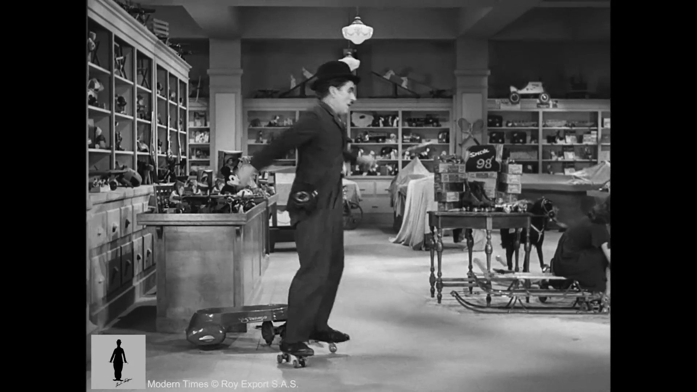
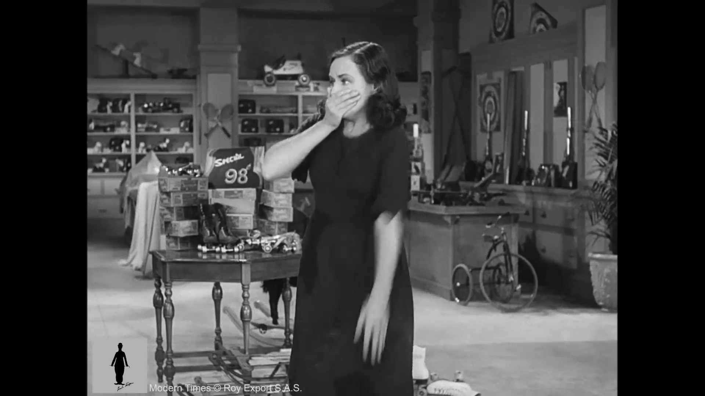
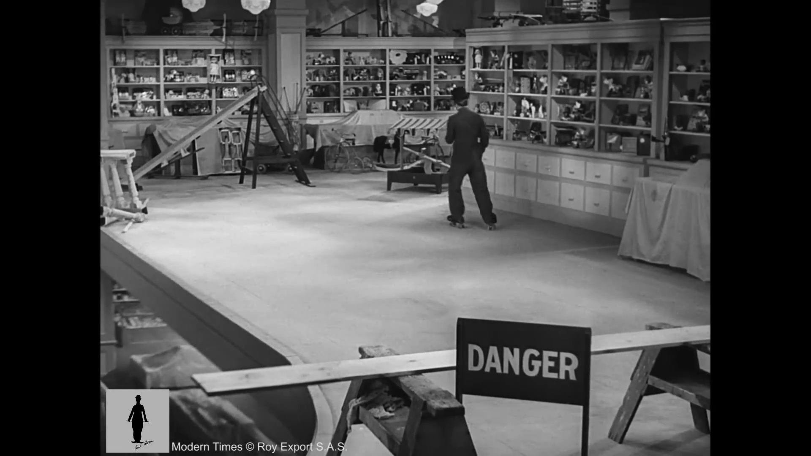

001 — Cold open - the empty office floor
Shot type: wide
Camera: static
Anchor: set_office_floor
Suggested tool: Veo 3 (wide/establishing realism)
wide of A cluttered open-plan tech office floor lined with product displays and rolling desk chairs, completely empty, long static hold on the empty floor before anyone enters, letting the space register as ordinary, static, flat even studio lighting, three-point setup, clean digital broadcast video, slight sharpening, no film grain, modern SNL live-sketch, digital video, single-camera studio sitcom look

002 — Coworker glides in, all confidence
Shot type: medium
Camera: handheld
Anchor: coworker_ref
Suggested tool: Seedance 2.0 (character-lock consistency, main workhorse)
medium of Sarah from HR rollerblades backward across the office floor, laughing over her shoulder at someone off-camera, handheld, flat even studio lighting, three-point setup, clean digital broadcast video, slight sharpening, no film grain, modern SNL live-sketch, digital video, single-camera studio sitcom look

003 — The intern joins in, oblivious and on a call
Shot type: medium
Camera: slow push-in
Anchor: intern_ref
Suggested tool: Seedance 2.0 (character-lock consistency, main workhorse)
medium of New intern Kevin skates in on rollerblades, AirPods in, deep in a work call, doing a little spin without looking where he's going, slow push-in, flat even studio lighting, three-point setup, clean digital broadcast video, slight sharpening, no film grain, modern SNL live-sketch, digital video, single-camera studio sitcom look

004 — Sarah clocks the danger
Shot type: medium
Camera: static
Anchor: coworker_alarmed_ref
Suggested tool: Seedance 2.0 (character-lock consistency, main workhorse)
medium of Sarah's smile drops as she spots Kevin drifting toward the unmarked construction zone behind him, holds on her frozen half-smile for a beat before the alarm fully registers on her face, static, flat even studio lighting, three-point setup, clean digital broadcast video, slight sharpening, no film grain, modern SNL live-sketch, digital video, single-camera studio sitcom look
005 — Sarah reacts in horror
Shot type: close-up
Camera: static
Anchor: coworker_alarmed_ref
Suggested tool: Seedance 2.0 (character-lock consistency, main workhorse)
close-up of Sarah claps a hand over her mouth, eyes wide, pointing frantically toward Kevin, static, flat even studio lighting, three-point setup, clean digital broadcast video, slight sharpening, no film grain, modern SNL live-sketch, digital video, single-camera studio sitcom look

006 — Kevin skates the edge, totally unaware
Shot type: wide
Camera: locked-off
Anchor: danger_sign_ref
Suggested tool: Veo 3 (wide/establishing realism)
wide of Kevin rolls calmly along the exposed ledge of the unfinished renovation zone, right past a DANGER floor-ends sign, still talking into his AirPods about quarterly numbers, let him coast for a full beat right at the edge before continuing, milking the obliviousness, locked-off, flat even studio lighting, three-point setup, clean digital broadcast video, slight sharpening, no film grain, modern SNL live-sketch, digital video, single-camera studio sitcom look

007 — The near-miss recovery
Shot type: wide
Camera: static
Anchor: intern_edge_ref
Suggested tool: Veo 3 (wide/establishing realism)
wide of Kevin's rollerblades teeter right at the drop-off, arms pinwheeling for balance for a split second, then he casually rolls back to safety without ever noticing, already laughing at something on his call, static, flat even studio lighting, three-point setup, clean digital broadcast video, slight sharpening, no film grain, modern SNL live-sketch, digital video, single-camera studio sitcom look